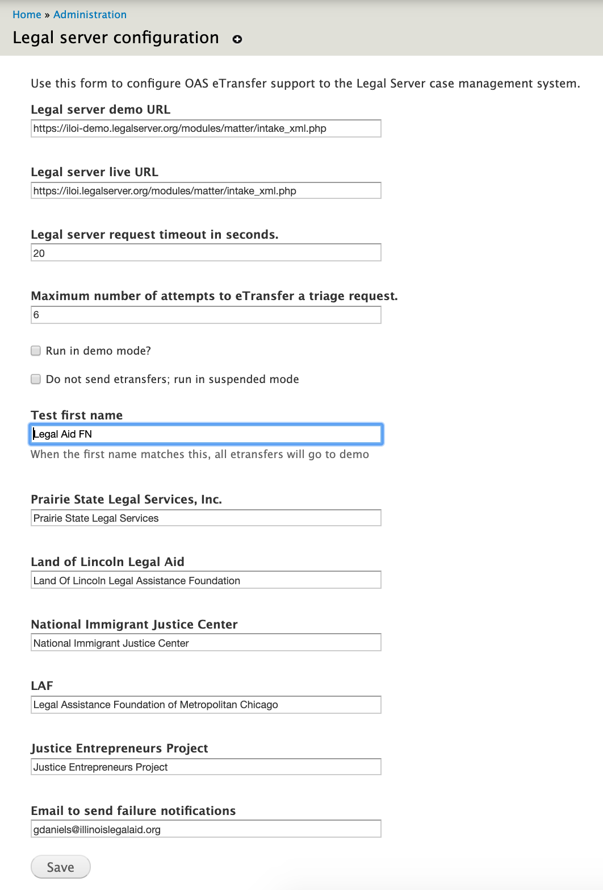

OAS Legal Server¶
This is the documentation for the oas_legal_server module. This provides the functionality to generate the data packet needed an sending it to the statewide instance of Legal Server case management system.
Dependencies¶
- entity
- entityreference
- ilao_oas_financial_category
- oas_intake_settings
Unofficial dependencies¶
Configuration¶
The module has a configuration interface that can be found at admin/intake/legal-server.
This interface is used to: * Set the API urls to send etransfers * Configure time outs and maximum retries * Set the system to run in a demo mode (where eTransfers go to the demo server) * Set the system to run suspended (where eTransfers are not sent) * Sets a dummy first name, used for automated testing * Sets the Legal server name for organizations. This must match the organization name text in Legal Server. * Sets an email notification address
Organizations are added to the configuration form when they have a service that accepts online intakes through IllinoisLegalAid.org
Permisssions¶
Module defines one permission to administer legal server. This permission controls access to the configuration.
Functionality¶
oas_legal_server_build_eTransfer accepts an array of client data and parses it into an XML packet that complies with the Legal Server XML standard m.
Warning
There is a new REST-based API for intakes that needs to be implemented.
Upon attempting to send an eTransfer, it handles two instances of failure:
- malformed XML will generally require human re-submission
- server failures
A notification of either instance is sent from the module to the email contact in the configuration.